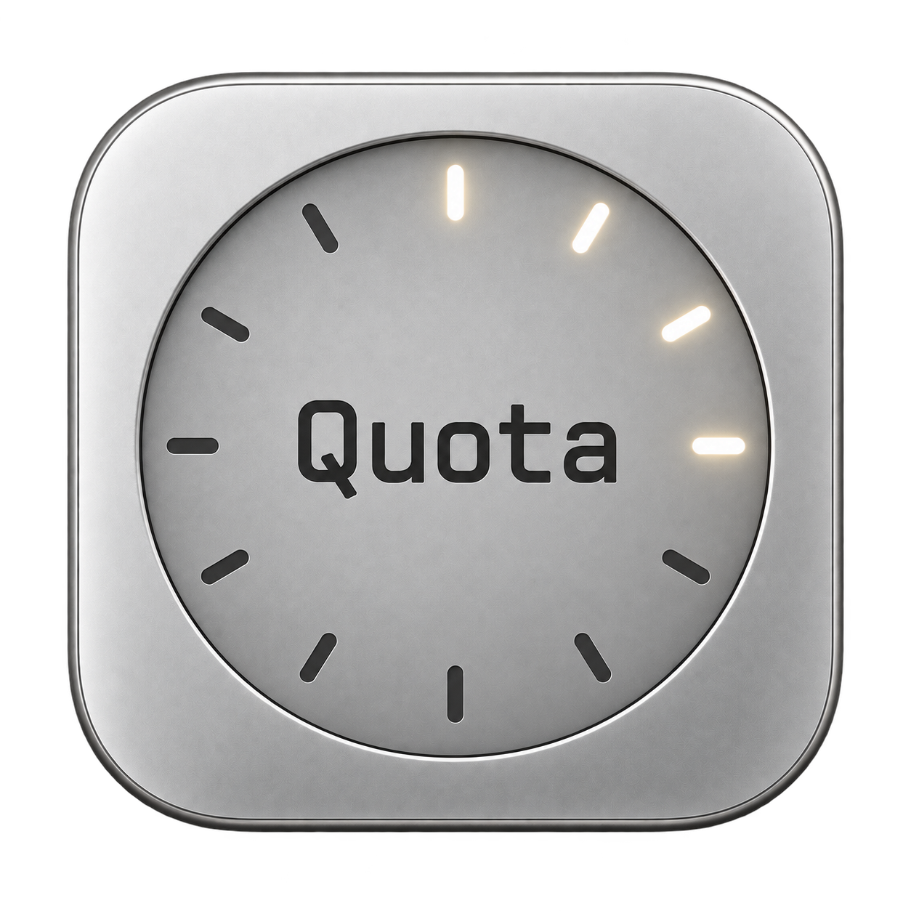

菜单栏
点开就能查看额度与余额。选择仪表盘或服务商标志，让主账户更醒目。

QuotaClockGitHub ↗为 MAC 而生 · 原生额度监控
从菜单栏到桌面，再到离开时的屏保。
把剩余额度，放在视线自然停留的地方。
macOS 14+ · Apple Silicon / Intel · v0.15.19
Remaining
界面示意 · 非真实账户数据
同一份数据，三种陪伴方式
点开就能查看额度与余额。选择仪表盘或服务商标志，让主账户更醒目。
让常用账户留在桌面。选择 Hero，或固定关注某个账户。
离开工作时，额度与时钟依然清晰呈现。支持防烧屏位移。
一处管理，随处查看
在「AI 服务」中管理连接和排序。打开 Auto Hero，跟随所选服务商当前登录的账户；关闭后，按你安排的顺序显示。
菜单栏与屏保各自选择显示哪些服务，互不干扰。浅色、深色或跟随系统，让 QuotaClock 融入你的 Mac。
开始使用
打开 DMG，将 QuotaClock 拖入应用程序文件夹。
双击屏保文件，按系统提示安装；再到系统设置中选用 QuotaClock。
在引导中独立登录或关联本机会话。小组件可从 macOS「编辑小组件」添加。
当前安装包已签名，尚未完成 Apple 公证。小组件刷新时机由 macOS 管理。Codex 账户切换会重启 Codex，请先结束正在运行的任务。